Gráficos y tablas en R y publicación en Quarto
Sesión del lunes, 9 de noviembre de 2026
Objetivo de la sesión
En esta sesión aprenderemos de manera aplicada como construir gráficos y tablas en R y su publicación en Quarto. Quarto funciona como un entorno de desarrollo que permite integrar código y texto en un mismo documento, facilitando la creación de informes y presentaciones dinámicas. El término dinámico en este contexto se refiere a la capacidad de actualizar automáticamente los elementos del documento cuando se modifica el código, sin necesidad de “cortar y pegar”. Para profundizar en Quarto, visitar la sesión anterior de documentos dinámicos.
Quarto en breve
Recordemos que la razón principal de trabajar con documentos Quarto (que tienen extensión .qmd) es que nos permite elaborar un documento dinámico, es decir, un documento que integra texto y código en un mismo archivo. Esto nos da la posibilidad de generar análisis y figuras, las cuales son actualizadas automáticamente cada vez que se ejecuta el código.
Una de las ventajas de los documentos dinámicos es que tienen distintos formatos de salida: un documento Quarto (.qmd) puede ser exportado a un documento HTML, PDF o Word. Este proceso de transformación de formato (por ejemplo, de .qmd a HTML) se denomina renderizado.
El renderizado es un proceso fundamental para la presentación de resultados: un documento Quarto se escribe en texto simple (plano), y solo una vez que pasa por el proceso de renderización se vuelven visibles las marcas de texto, los gráficos y las tablas dentro del documento.
La forma de escritura en texto simple que vamos a utilizar se denomina Markdown, y es un lenguaje de marcado que permite dar formato al texto de manera sencilla. Por ejemplo, para crear un título se utiliza el símbolo # seguido del texto del título, mientras que para crear una lista se utilizan guiones o asteriscos. Markdown es ampliamente utilizado en la documentación técnica y en la creación de contenido web debido a su simplicidad y legibilidad.
Documento guía del práctico
Este práctico va acompañado de un documento Quarto con el código para generar tablas y gráficos. Lo pueden bajar aquí (también pueden ver aquí cómo se ve renderizado), y partir renderizando en Positron, para que puedan ver el resultado final. Ahora vamos parte por parte, comenzando por la generación de gráficos, y luego de tablas.
1 ¿Qué es visualizar datos?
La visualización de datos consiste en dar sentido a filas y columnas de datos, presentándolos en un formato fácilmente comprensible a una audiencia.

Visualizar datos es una de las tareas más recurrentes en estadística, al mismo tiempo que es una de las formas más delicadas de comunicar información. ¿A qué nos referimos? básicamente a que, como investigadores/as, comunicamos nuestros resultados buscando resaltar un aspecto de la realidad e intentando crear un mensaje con los datos. Por ello, es sumamente importante hacerlo de forma fidedigna, sencilla y pensando siempre en cómo la audiencia podría interpretarlo.
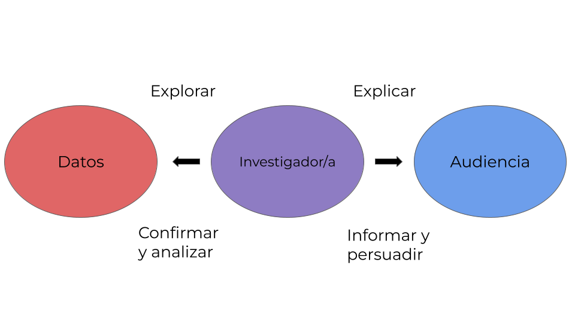
Cómo NO visualizar datos
Es bastante común ver malas formas de comunicar datos; en los medios de comunicación, redes sociales e inclusive en la misma investigación acádemica. Esto ocurre por diversos motivos, ya sea por elementos gráficos, de escalas o de orden que engañan al ojo y percepción humana. Algunos ejemplos de cómo no se deben comunicar datos son:
2 Datos del ejemplo: LAPOP
En esta ocasión trabajaremos con un subconjunto de datos previamente procesados derivados de las encuestas realizadas en diferentes países por el Latin American Public Opinion Proyect (LAPOP) en su ola del 2018. Para este ejercicio, obtendremos directamente esta base desde internet. No obstante, también tienes la opción de acceder a la misma información a través del siguiente enlace: LAPOP 2018. Desde allí, podrás descargar el archivo que contiene el subconjunto procesado de la base de datos LAPOP 2018.
- Comencemos por preparar nuestros datos. Iniciamos cargando las librerías necesarias.
pacman::p_load(tidyverse, # Manipulacion datos
ggplot2, # Gráficos
sjPlot, # Tablas y gráficos
ggpubr) # Gráficos
options(scipen = 999) # para desactivar notacion cientifica
rm(list = ls()) # para limpiar el entorno de trabajo- Cargamos los datos desde internet.
load(url("https://github.com/cursos-metodos-facso/datos-ejemplos/raw/main/lapop_proc_2018.RData")) #Cargar base de datos- A continuación, exploramos la base de datos.
names(lapop) # Nombre de columnas [1] "year" "pais" "pais_name" "idnum" "upm"
[6] "strata" "wt" "weight1500" "sexo" "edad"
[11] "educ" "l1" "ideologia_f" "empleo" "decile"
[16] "it1" "prot3" "aoj12" "b2" "b3"
[21] "b4" "b10a" "b12" "b20" "b20a"
[26] "b21" "b21a" "n9" "n11" "n15"
[31] "ros4" "ing4" "eff1" "pn4" "exc7"
[36] "pol1" "vb2" "gini" "gdp" dim(lapop) # Dimensiones[1] 23386 39Contamos con 39 variables (columnas) y 23.386 observaciones (filas). Vamos a seleccionar las variables que vamos a utilizar en nuestro ejemplo: pais, sexo, edad, decile, ideologia_f, ros4, prot3, it1, gini y gdp. Para ello, ejecutamos el siguiente código:
lapop <- lapop %>% dplyr::select(pais, sexo, edad, decile, ideologia_f, ros4, prot3, it1, gini, gdp) # Seleccionamos variables de interesNivel de medición de las variables
Antes de visualizar los datos, es crucial conocer el nivel de medición de nuestras variables y analizar la forma de su distribución. En esta guía utilizaremos las siguientes variables del subset de LAPOP 2018:
| Variable | Qué mide | Nivel de medición |
|---|---|---|
pais |
País de residencia de la persona encuestada | Nominal (politómica) |
sexo |
Sexo de la persona encuestada | Nominal (dummy) |
edad |
Edad de la persona encuestada | Continua |
decile |
Ingreso del hogar (decil) | Continua |
ideologia_f |
Ideología política (izquierda, centro, derecha, no identificada) | Nominal (politómica) |
ros4 |
Preferencia por la redistribución (1 a 7) | Ordinal |
prot3 |
Participación en protestas | Nominal (dummy) |
gini |
Índice de Gini del país (desigualdad económica) | Continua |
Distribución de la variable central de estudio
Ahora nos concentraremos en analizar y visualizar la variable sobre preferencia por la redistribución [ros4]. Veamos su distribución univariada:
sjmisc::frq(lapop$ros4)Gobierno debe Implementar Políticas para Reducir Desigualdadad de Ingresos (x) <numeric>
# total N=23386 valid N=23111 mean=5.31 sd=1.77
Value | Label | N | Raw % | Valid % | Cum. %
-----------------------------------------------------------
1 | Muy en desacuerdo | 1198 | 5.12 | 5.18 | 5.18
2 | 2 | 899 | 3.84 | 3.89 | 9.07
3 | 3 | 1650 | 7.06 | 7.14 | 16.21
4 | 4 | 3033 | 12.97 | 13.12 | 29.34
5 | 5 | 3880 | 16.59 | 16.79 | 46.13
6 | 6 | 3882 | 16.60 | 16.80 | 62.92
7 | Muy de acuerdo | 8569 | 36.64 | 37.08 | 100.00
<NA> | <NA> | 275 | 1.18 | <NA> | <NA>3 Gráficos
3.1 Visualización de datos con ggplot2
Una vez que conocemos cómo es la distribución de nuestras variables, procedemos a graficarlas considerando los principios para una buena visualizacion de datos.
En este contexto, ggplot2 es un potente paquete para visualizar datos en R. Funciona por capas, comenzando desde lo central hasta llegar a los detalles más estéticos necesarios.

- La primera capa corresponde a los datos, es decir, las variables que queremos graficar ya listas y procesadas.
- La segunda corresponde al “mapping”, que es básicamente determinar cuáles variables serán el eje X e Y, si existen grupos u otros.
- La tercera es la geometría, la cual se refiere a la forma que tendrá el gráfico (líneas, barras, puntos, boxplot, violinplot, etc.).
El primer paso (recomendado) para generar gráficos en R es crear un objeto o base de datos ya procesada que contenga las variables que nos interesan listas para graficar. Luego, ir aplicando capa por capa los diferentes elementos de mapping, geometría, escalas, estadísticas y elementos estéticos útiles.
3.1.1 Diferencias de medias (o proporciones) entre grupos
Evaluemos si, visualmente, se observan diferencias en la media de preferencia por la redistribución entre las personas que se definen como de izquierda, centro, derecha y no identificada.
db_g1 <- lapop %>%
group_by(ideologia_f) %>%
summarise(
media_ros4 = mean(ros4, na.rm = TRUE),
error_std = sd(ros4, na.rm = TRUE) / sqrt(n()),
ci_inf = media_ros4 - qt(0.975, df = n() - 1) * error_std,
ci_sup = media_ros4 + qt(0.975, df = n() - 1) * error_std
) %>%
na.omit()
db_g1
## # A tibble: 4 × 5
## ideologia_f media_ros4 error_std ci_inf ci_sup
## <fct> <dbl> <dbl> <dbl> <dbl>
## 1 Derecha 5.34 0.0222 5.29 5.38
## 2 Centro 5.40 0.0199 5.36 5.44
## 3 Izquierda 5.33 0.0220 5.29 5.37
## 4 No declarado 5.05 0.0327 4.98 5.11ggplot(data = db_g1,
mapping = aes(x = ideologia_f, y = media_ros4)) # especificamos datos y mapping 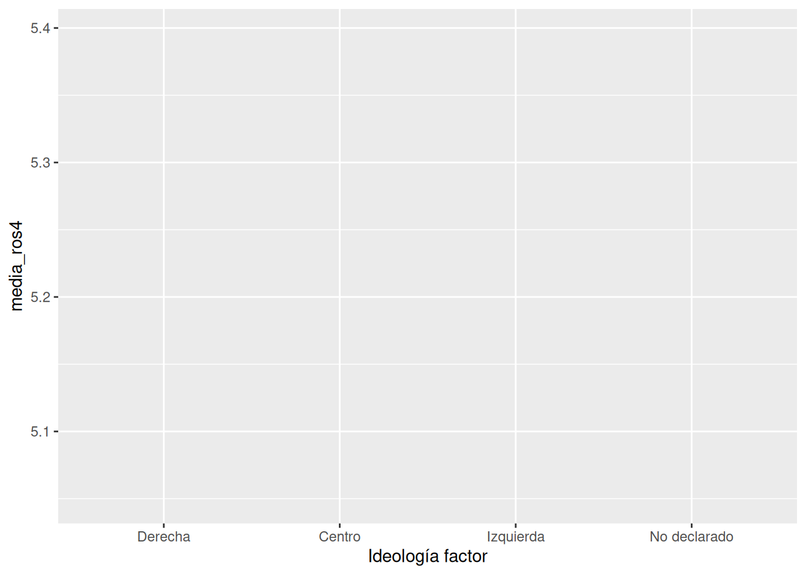
ggplot(data = db_g1,
mapping = aes(x = ideologia_f, y = media_ros4)) + # especificamos datos y mapping
geom_bar(stat = "identity") # agregamos geometria 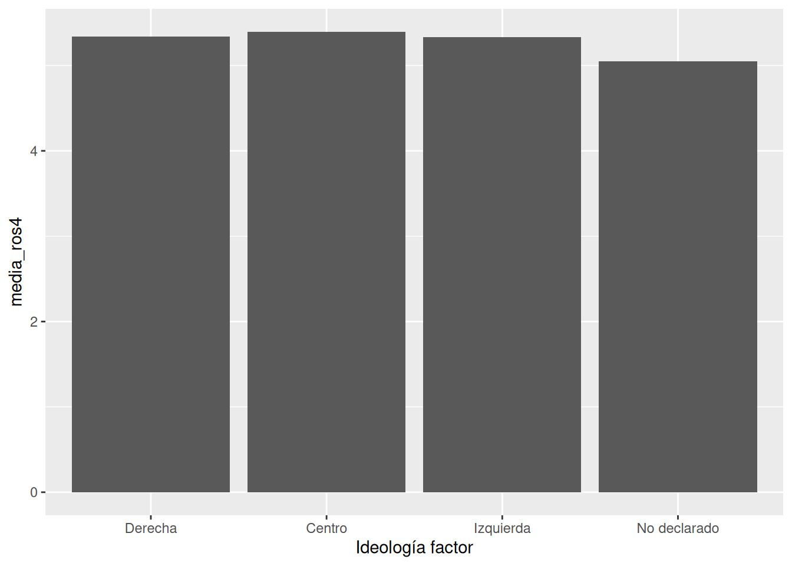
ggplot(data = db_g1,
mapping = aes(x = ideologia_f, y = media_ros4, group = ideologia_f)) + # especificamos datos y mapping
geom_bar(stat = "identity") + # agregamos geometria
geom_errorbar(aes(ymin = ci_inf, ymax = ci_sup), width = 0.2, color = "red") # agregamos intervalo de confianza calculado previamente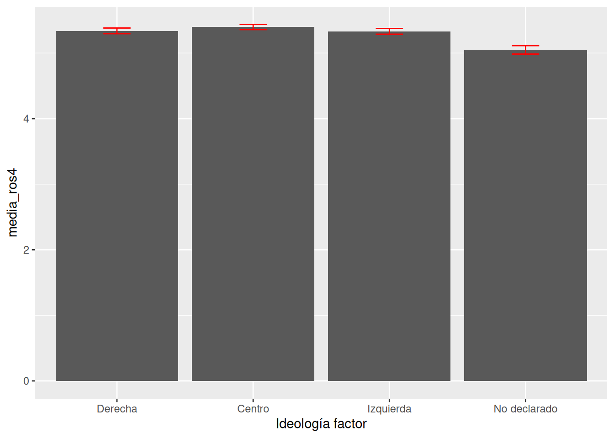
ggplot(data = db_g1,
mapping = aes(x = ideologia_f, y = media_ros4, group = ideologia_f)) + # especificamos datos y mapping
geom_bar(stat = "identity") + # agregamos geometria
geom_errorbar(aes(ymin = ci_inf, ymax = ci_sup), width = 0.2, color = "red") + # agregamos intervalo de confianza calculado previamente
scale_y_continuous(limits = c(0,7), n.breaks = 7) # agregamos escala en eje Y y ponemos limites minimos y maximos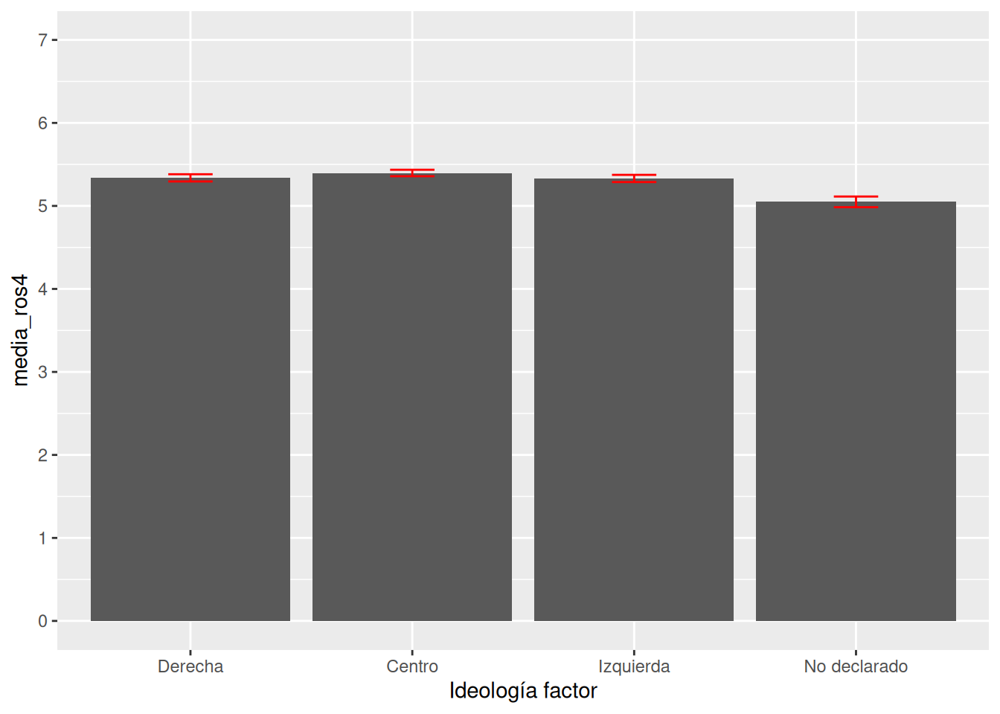
ggplot(data = db_g1,
mapping = aes(x = ideologia_f, y = media_ros4, group = ideologia_f)) + # especificamos datos y mapping
geom_bar(stat = "identity") + # agregamos geometria
geom_errorbar(aes(ymin = ci_inf, ymax = ci_sup), width = 0.2, color = "red") + # agregamos intervalo de confianza calculado previamente
scale_y_continuous(limits = c(0,7), n.breaks = 7) + # agregamos escala en eje Y y ponemos limites minimos y maximos
geom_text(aes(label = round(media_ros4,2)), vjust = 1.5, colour = "white") # agregamos los valores de la media para cada barra/grupo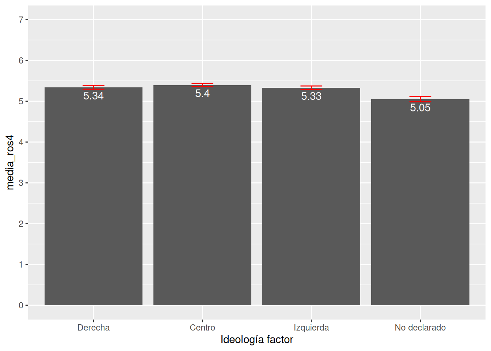
ggplot(data = db_g1,
mapping = aes(x = ideologia_f, y = media_ros4, group = ideologia_f)) + # especificamos datos y mapping
geom_bar(stat = "identity", color = "black", fill = "steelblue") + # agregamos geometria
geom_errorbar(aes(ymin = ci_inf, ymax = ci_sup), width = 0.2, color = "red") + # agregamos intervalo de confianza calculado previamente
scale_y_continuous(limits = c(0,7), n.breaks = 7) + # agregamos escala en eje Y y ponemos limites minimos y maximos
geom_text(aes(label = round(media_ros4,2)), vjust = 1.5, colour = "white") + # agregamos los valores de la media para cada barra/grupo
labs(title ="Media de preferencia por la redistribución según ideología política",
x = "Ideología política",
y = "Media",
caption = "Fuente: Elaboración propia en base a LAPOP 2018.") + # agregamos titulo, nombres a los ejes y fuente
theme_bw() # especificamos tema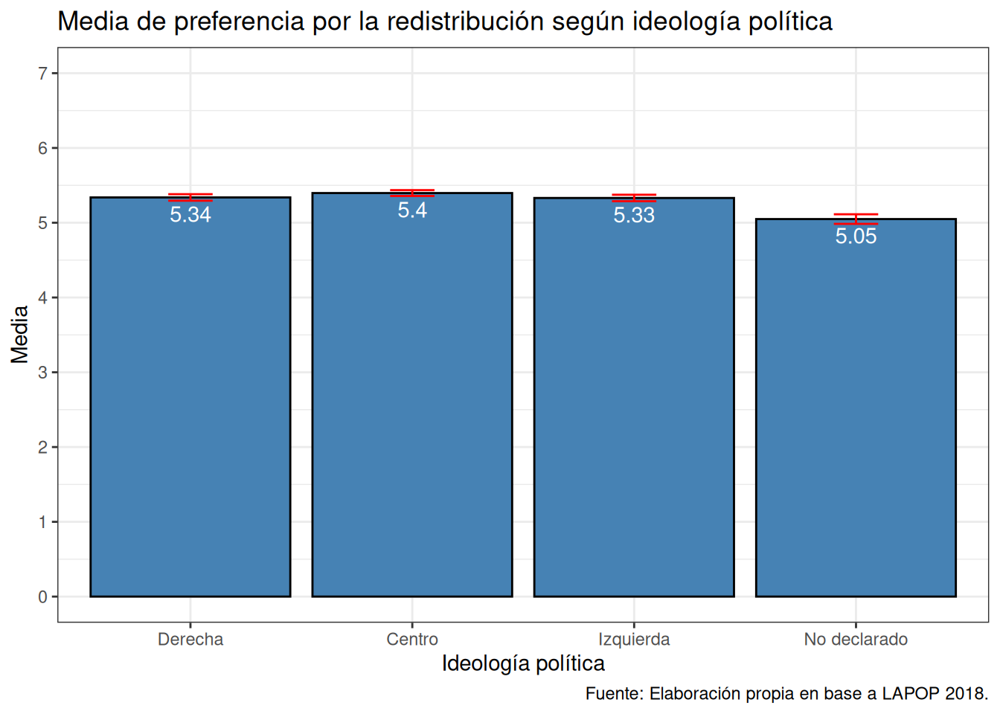
3.1.2 Asociación entre continuas
Evaluemos cómo se asocian la preferencias por la redistribución de los países con su nivel de desigualdad económica.
db_g2 <- lapop %>%
group_by(pais) %>%
summarise(cm_ros4 = mean(ros4, na.rm = T),
cm_gini = mean(gini, na.rm = T)) %>%
ungroup()
head(db_g2)
## # A tibble: 6 × 3
## pais cm_ros4 cm_gini
## <chr> <dbl> <dbl>
## 1 ARG 5.43 41.1
## 2 BOL 4.72 44.6
## 3 BRA 5.43 53.3
## 4 CHL 5.69 44.4
## 5 COL 5.37 49.7
## 6 CRI 6.05 48.3ggplot(data = db_g2,
mapping = aes(x = cm_gini, y = cm_ros4)) # especificamos datos y mapping 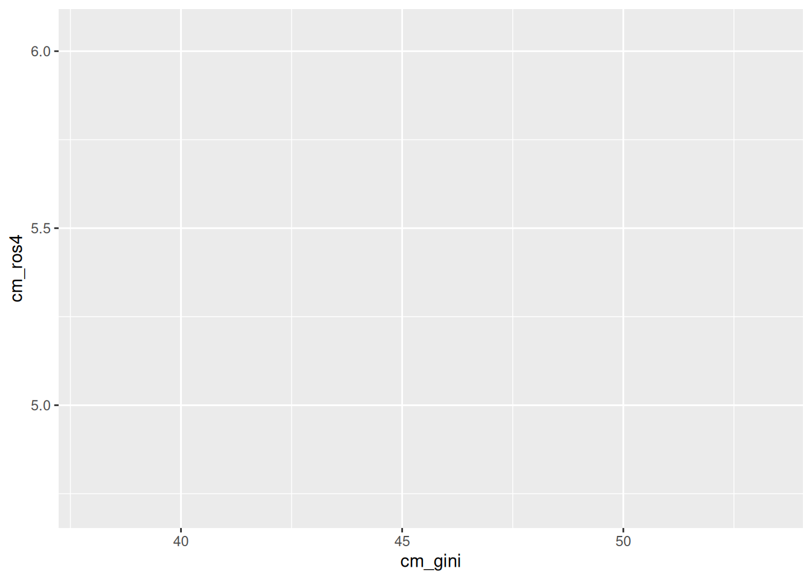
ggplot(data = db_g2,
mapping = aes(x = cm_gini, y = cm_ros4)) + # especificamos datos y mapping
geom_point(size = 3, color = "darkred") # agregamos geometria y color 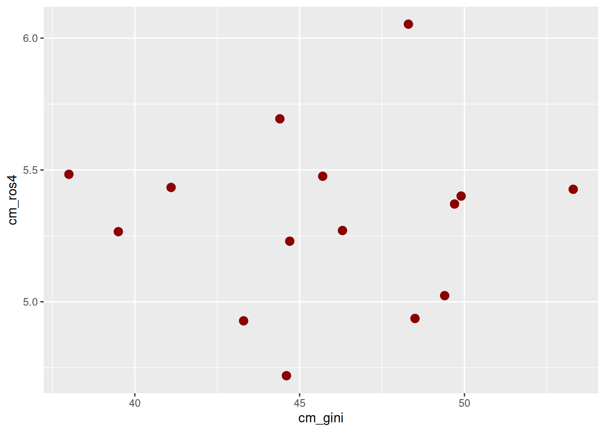
ggplot(data = db_g2,
mapping = aes(x = cm_gini, y = cm_ros4)) + # especificamos datos y mapping
geom_point(size = 3, color = "darkred") + # agregamos geometria y color
geom_smooth(stat = "smooth", position = "identity", method = "lm",
colour = "blue", size = 0.7) # agregamos recta que representa la correlacion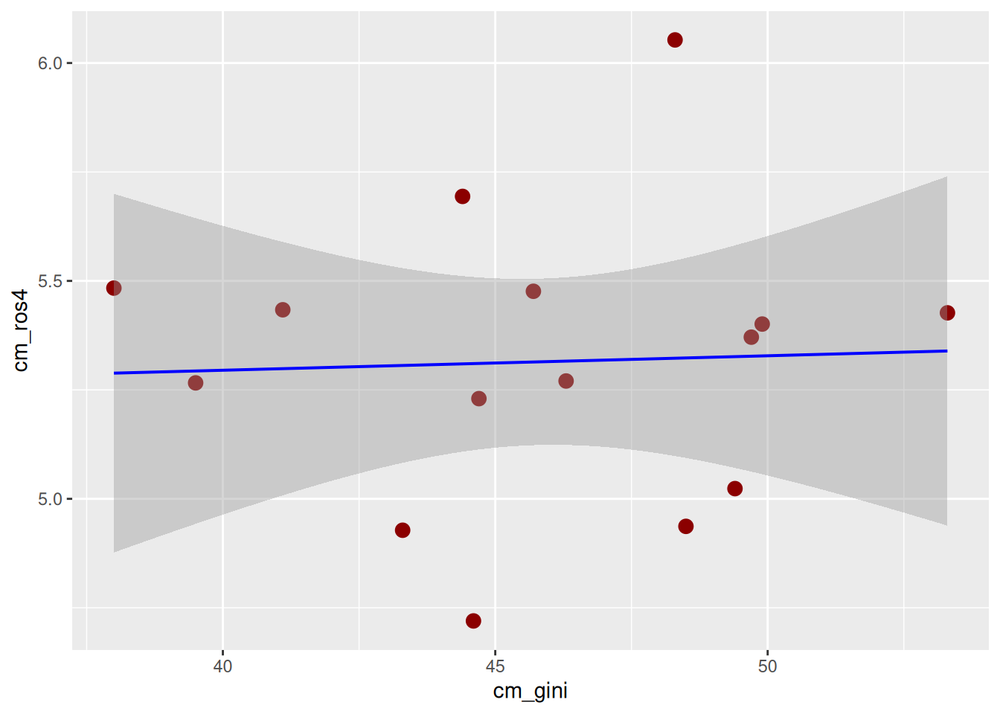
ggplot(data = db_g2,
mapping = aes(x = cm_gini, y = cm_ros4)) + # especificamos datos y mapping
geom_point(size = 3, color = "darkred") + # agregamos geometria y color
geom_smooth(stat = "smooth", position = "identity", method = "lm",
colour = "blue", size = 0.7) + # agregamos recta que representa la correlacion
scale_y_continuous(limits = c(4,6.5), breaks = seq(4,6.5, by = 0.5)) + # agregamos escala en eje Y y ponemos limites minimos y maximos
scale_x_continuous(n.breaks = 7) # agregamos escala eje X para mostrar más valores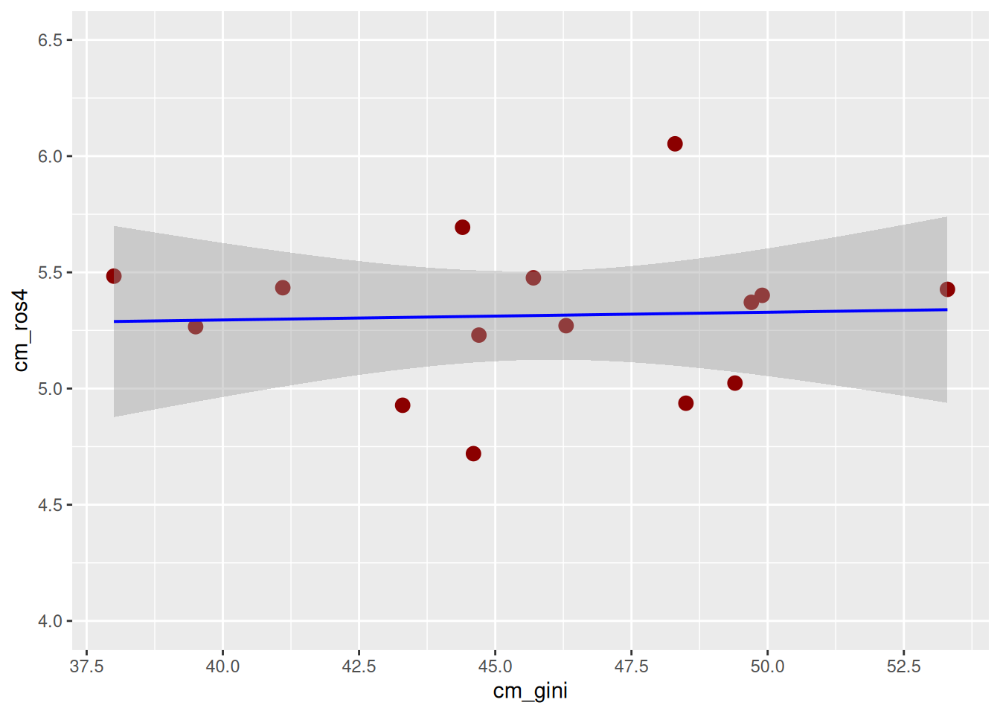
ggplot(data = db_g2,
mapping = aes(x = cm_gini, y = cm_ros4)) + # especificamos datos y mapping
geom_point(size = 3, color = "darkred") + # agregamos geometria y color
geom_smooth(stat = "smooth", position = "identity", method = "lm",
colour = "blue", size = 0.7) + # agregamos recta que representa la correlacion
scale_y_continuous(limits = c(4,6.5), breaks = seq(4,6.5, by = 0.5)) + # agregamos escala en eje Y y ponemos limites minimos y maximos
scale_x_continuous(n.breaks = 7) +# agregamos escala eje X para mostrar más valores
geom_text(aes(label = pais), size = 3, color = "black",
nudge_y = 0.15) # agregamos los valores de la media para cada barra/grupo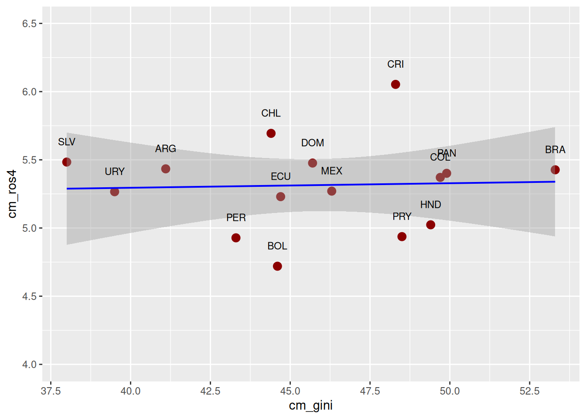
ggplot(data = db_g2,
mapping = aes(x = cm_gini, y = cm_ros4)) + # especificamos datos y mapping
geom_point(size = 3, color = "darkred") + # agregamos geometria y color
geom_smooth(stat = "smooth", position = "identity", method = "lm",
colour = "blue", size = 0.7) + # agregamos recta que representa la correlacion
scale_y_continuous(limits = c(4,6.5), breaks = seq(4,6.5, by = 0.5)) + # agregamos escala en eje Y y ponemos limites minimos y maximos
scale_x_continuous(n.breaks = 7) + # agregamos escala eje X para mostrar más valores
geom_text(aes(label = pais), size = 3, color = "black",
nudge_y = 0.15) + # agregamos los valores de la media para cada barra/grupo
labs(title ="Asociación entre preferencia por la redistribución y desigualdad de los países",
y = "Media preferencias redistributivas",
x = "Índice de Gini",
caption = "Fuente: Elaboración propia en base a LAPOP 2018.") + # agregamos titulo, nombres a los ejes y fuente
theme_bw() # especificamos tema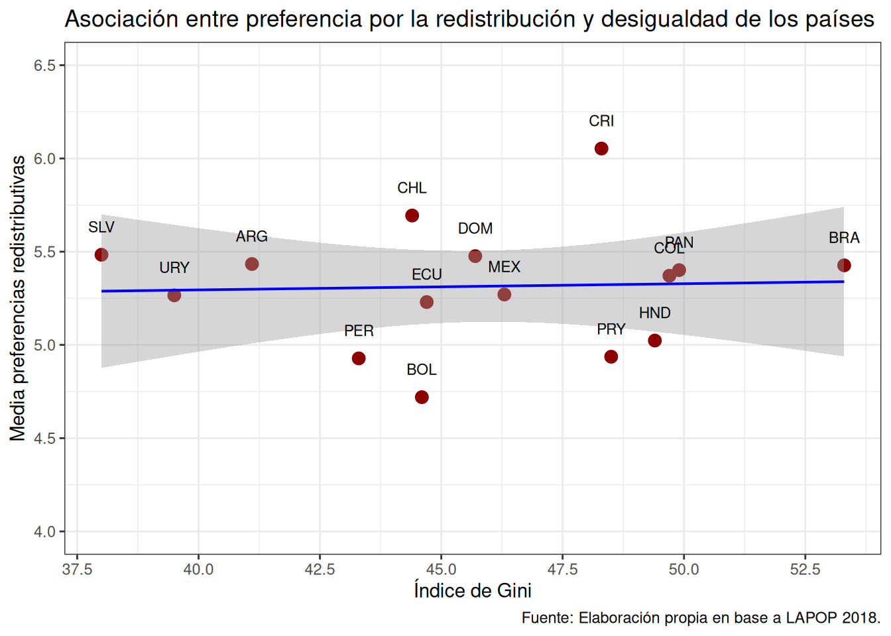
3.1.3 Asociación entre categóricas
Evaluemos la asociación entre la participación en protestas y la ideología política de los individuos.
3.1.3.1 Con ggplot2
Usaremos barras apiladas que suman 100%. Como en una tabla de contingencia, podemos calcular los porcentajes en dos direcciones: dentro de cada categoría de ideología o dentro de cada categoría de participación en protestas.
db_g3 <- lapop %>%
dplyr::select(prot3, ideologia_f) %>%
na.omit()
# Porcentajes que suman 100% dentro de cada ideología
db_g3a <- db_g3 %>%
count(ideologia_f, prot3) %>% # frecuencias por combinación de categorías
group_by(ideologia_f) %>%
mutate(prop = n / sum(n) * 100)
# Porcentajes que suman 100% dentro de cada categoría de participación
db_g3b <- db_g3 %>%
count(prot3, ideologia_f) %>%
group_by(prot3) %>%
mutate(prop = n / sum(n) * 100)
db_g3a
## # A tibble: 8 × 4
## # Groups: ideologia_f [4]
## ideologia_f prot3 n prop
## <fct> <fct> <int> <dbl>
## 1 Derecha Sí 872 12.8
## 2 Derecha No 5933 87.2
## 3 Centro Sí 587 8.83
## 4 Centro No 6058 91.2
## 5 Izquierda Sí 577 8.96
## 6 Izquierda No 5864 91.0
## 7 No declarado Sí 299 8.66
## 8 No declarado No 3154 91.3
db_g3b
## # A tibble: 8 × 4
## # Groups: prot3 [2]
## prot3 ideologia_f n prop
## <fct> <fct> <int> <dbl>
## 1 Sí Derecha 872 37.3
## 2 Sí Centro 587 25.1
## 3 Sí Izquierda 577 24.7
## 4 Sí No declarado 299 12.8
## 5 No Derecha 5933 28.2
## 6 No Centro 6058 28.8
## 7 No Izquierda 5864 27.9
## 8 No No declarado 3154 15.0ggplot(data = db_g3a,
mapping = aes(x = ideologia_f, y = prop, fill = prot3)) + # especificamos datos y mapping
geom_col() # barras apiladas que suman 100%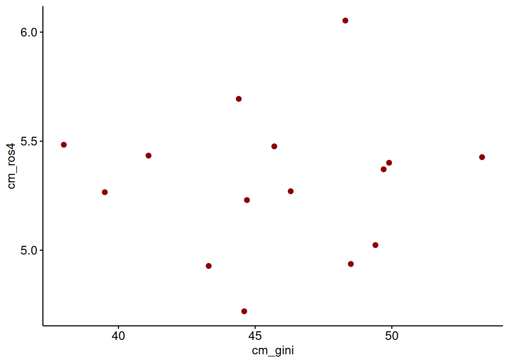
ggplot(data = db_g3a,
mapping = aes(x = ideologia_f, y = prop, fill = prot3)) +
geom_col() +
geom_text(aes(label = paste0(round(prop, 1), "%")),
position = position_stack(vjust = 0.5)) # porcentajes al centro de cada segmento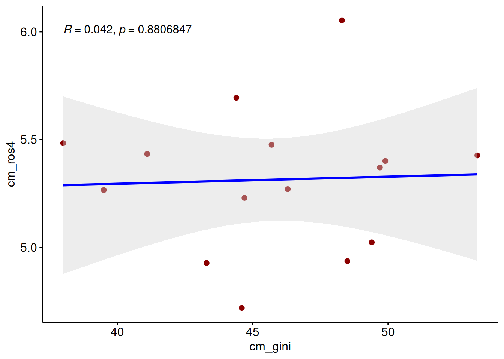
¿Qué proporción de cada grupo ideológico participó en protestas?
ggplot(data = db_g3a,
mapping = aes(x = ideologia_f, y = prop, fill = prot3)) +
geom_col() +
geom_text(aes(label = paste0(round(prop, 1), "%")),
position = position_stack(vjust = 0.5)) +
labs(title = "Participación en protestas según ideología política",
y = "Porcentaje",
x = "Ideología política",
fill = "Participación protesta",
caption = "Fuente: Elaboración propia en base a LAPOP 2018.") + # agregamos titulo, nombres a los ejes y fuente
theme_bw() # especificamos tema
¿Cuál es la composición ideológica de quienes participan y de quienes no?
ggplot(data = db_g3b,
mapping = aes(x = prot3, y = prop, fill = ideologia_f)) +
geom_col() +
geom_text(aes(label = paste0(round(prop, 1), "%")),
position = position_stack(vjust = 0.5)) +
labs(title = "Ideología política según participación en protestas",
y = "Porcentaje",
x = "Participación protesta",
fill = "Ideología política",
caption = "Fuente: Elaboración propia en base a LAPOP 2018.") + # agregamos titulo, nombres a los ejes y fuente
theme_bw() # especificamos tema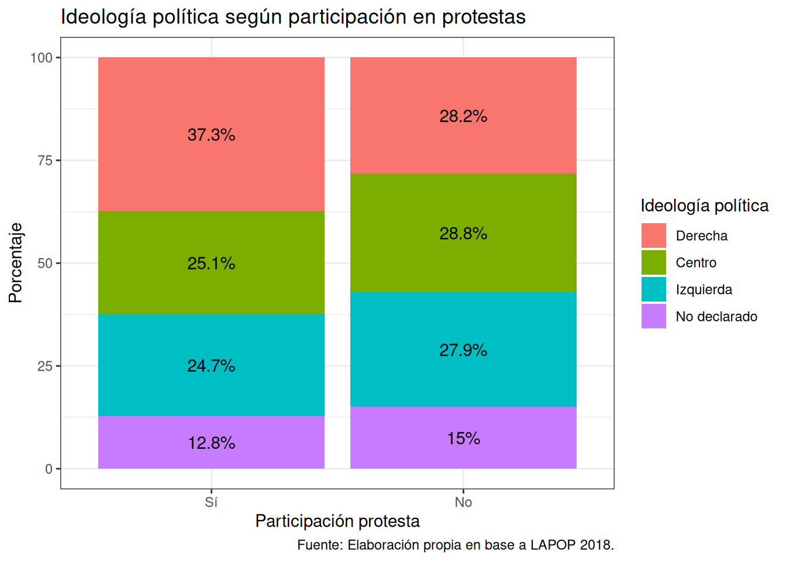
3.2 Visualización con otras librerías
3.2.1 Con ggpubr
db_g2 <- lapop %>%
group_by(pais) %>%
summarise(cm_ros4 = mean(ros4, na.rm = T),
cm_gini = mean(gini, na.rm = T)) %>%
ungroup()
head(db_g2)
## # A tibble: 6 × 3
## pais cm_ros4 cm_gini
## <chr> <dbl> <dbl>
## 1 ARG 5.43 41.1
## 2 BOL 4.72 44.6
## 3 BRA 5.43 53.3
## 4 CHL 5.69 44.4
## 5 COL 5.37 49.7
## 6 CRI 6.05 48.3ggscatter(data = db_g2,
x = "cm_gini",
y = "cm_ros4",
color = "darkred") # agregamos mapping y geometría a la vezggscatter(data = db_g2,
x = "cm_gini",
y = "cm_ros4",
color = "darkred",
cor.coef = T, # mostrar coef corr
cor.coef.size = 4, # tamaño texto coef corr
add = "reg.line", # mostrar linea de reg
conf.int = T, # mostrar SE
add.params = list(color = "blue", fill = "lightgray")) # colores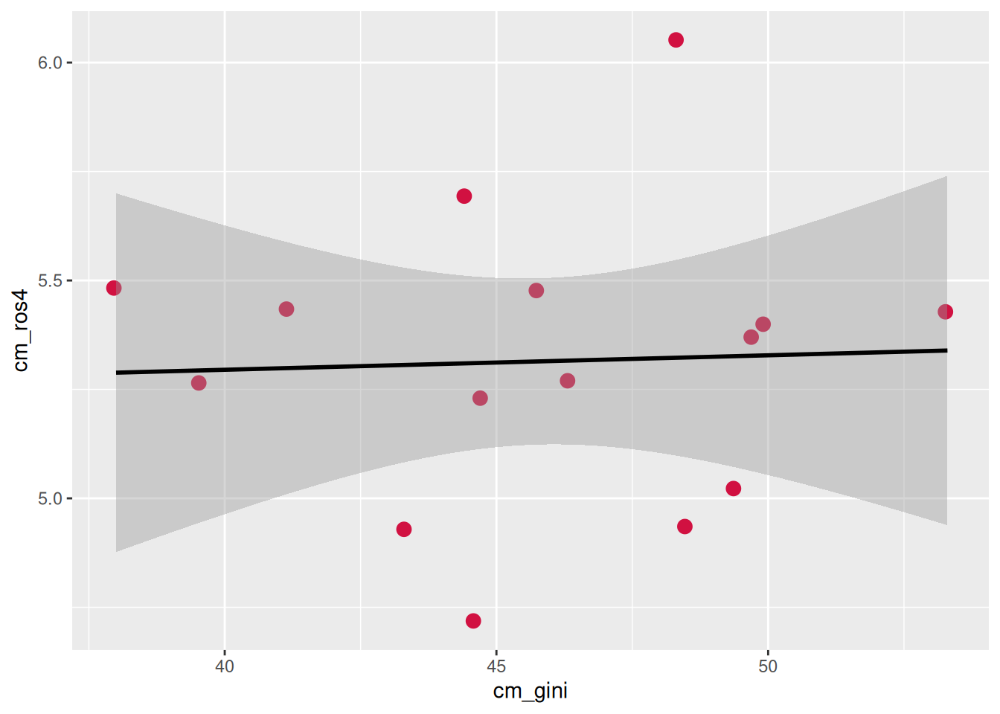
ggscatter(data = db_g2,
x = "cm_gini",
y = "cm_ros4",
color = "darkred",
cor.coef = T, # mostrar coef corr
cor.coef.size = 4, # tamaño texto coef corr
add = "reg.line", # mostrar linea de reg
conf.int = T, # mostrar SE
add.params = list(color = "blue", fill = "lightgray"), # colores
label = "pais",
size = 3,
font.label = c(8, "plain")
)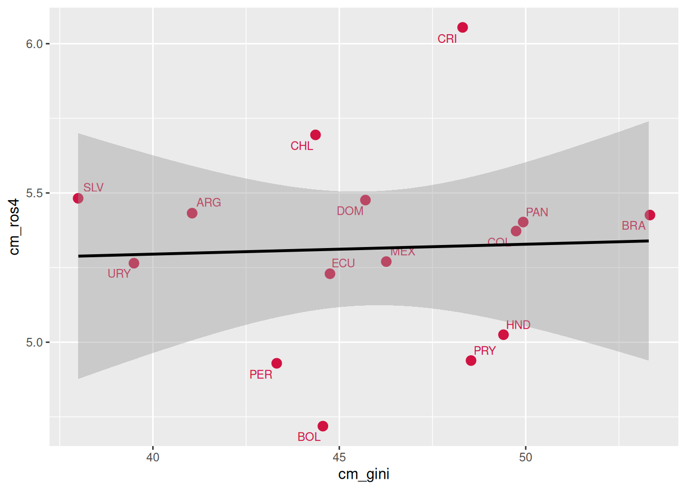
ggscatter(data = db_g2,
x = "cm_gini",
y = "cm_ros4",
color = "darkred",
cor.coef = T, # mostrar coef corr
cor.coef.size = 4, # tamaño texto coef corr
add = "reg.line", # mostrar linea de reg
conf.int = T, # mostrar SE
add.params = list(color = "blue", fill = "lightgray"), # colores
label = "pais",
size = 3,
font.label = c(8, "plain")
) +
labs(title ="Asociación entre preferencia por la redistribución y desigualdad de los países",
y = "Media preferencias redistributivas",
x = "Índice de Gini",
caption = "Fuente: Elaboración propia en base a LAPOP 2018.") + # agregamos titulo, nombres a los ejes y fuente
theme_bw() # especificamos tema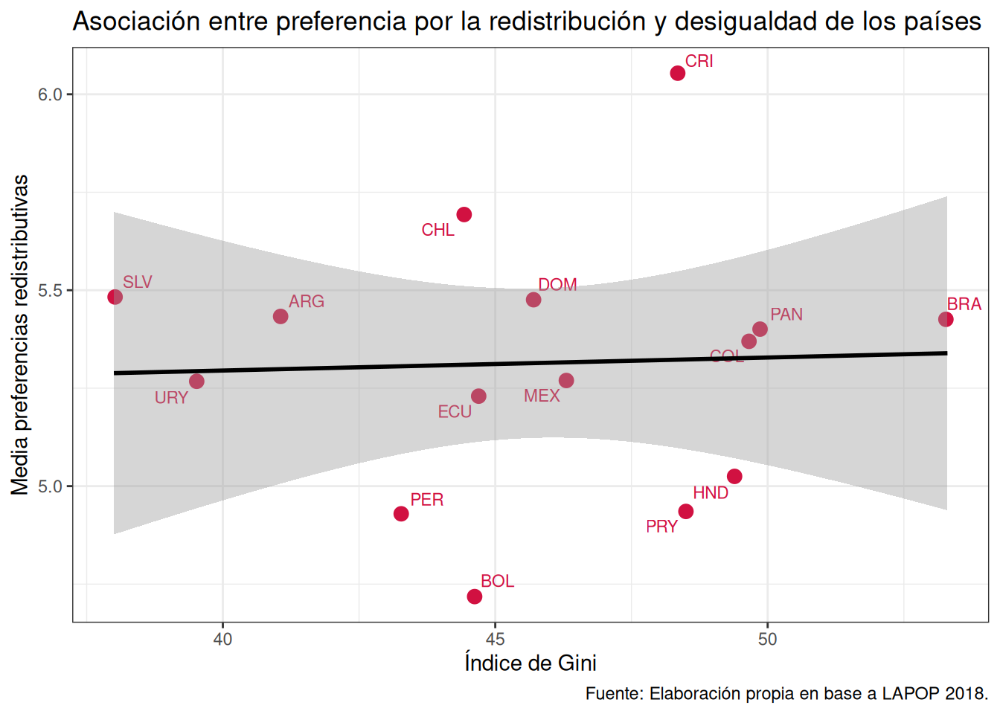
3.2.2 Con sjPlot
db_g2 <- lapop %>%
group_by(pais) %>%
summarise(cm_ros4 = mean(ros4, na.rm = T),
cm_gini = mean(gini, na.rm = T)) %>%
ungroup()
head(db_g2)
## # A tibble: 6 × 3
## pais cm_ros4 cm_gini
## <chr> <dbl> <dbl>
## 1 ARG 5.43 41.1
## 2 BOL 4.72 44.6
## 3 BRA 5.43 53.3
## 4 CHL 5.69 44.4
## 5 COL 5.37 49.7
## 6 CRI 6.05 48.3sjPlot::plot_scatter(data = db_g2,
x = cm_gini,
y = cm_ros4) # agregamos mapping y geometría a la vez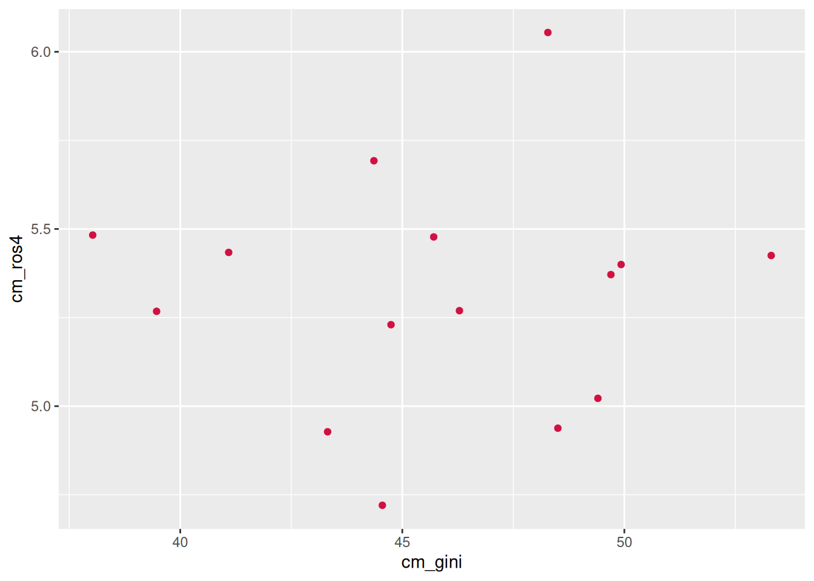
sjPlot::plot_scatter(data = db_g2,
x = cm_gini,
y = cm_ros4,
fit.line = "lm", # mostrar linea de reg
show.ci = T,# mostrar SE
dot.size = 3)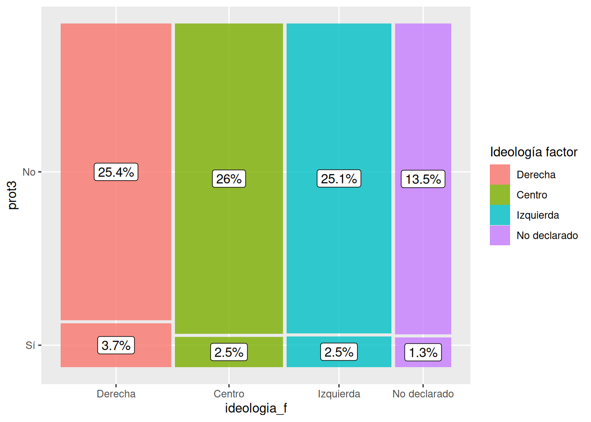
sjPlot::plot_scatter(
data = db_g2,
x = cm_gini,
y = cm_ros4,
fit.line = "lm", # Mostrar línea de regresión
show.ci = TRUE, # Mostrar intervalo de confianza
dot.size = 3,
dot.labels = db_g2$pais # Etiquetas de los puntos
)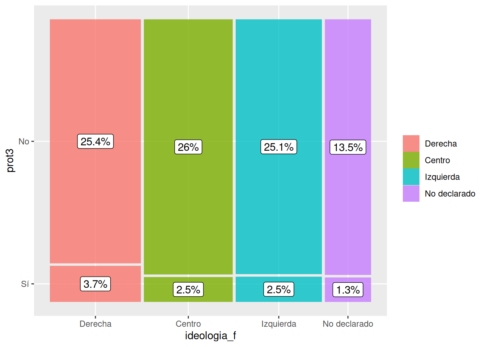
sjPlot::plot_scatter(
data = db_g2,
x = cm_gini,
y = cm_ros4,
fit.line = "lm", # Mostrar línea de regresión
show.ci = TRUE, # Mostrar intervalo de confianza
dot.size = 3,
dot.labels = db_g2$pais # Etiquetas de los puntos
) +
labs(title ="Asociación entre preferencia por la redistribución y desigualdad de los países",
y = "Media preferencias redistributivas",
x = "Índice de Gini",
caption = "Fuente: Elaboración propia en base a LAPOP 2018.") + # agregamos titulo, nombres a los ejes y fuente
theme_bw() # especificamos tema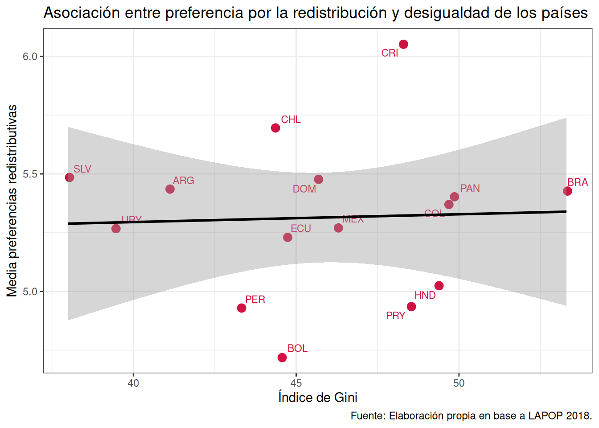
4 Tablas
Para la construcción y visualización de tablas en R utilizamos paquetes distintos a los que usamos para gráficos. En esta sección de la sesión cargaremos los siguientes paquetes:
pacman::p_load(tidyverse, # Manipulacion datos
sjmisc, # Descriptivos
knitr, # Render y tablas
kableExtra, # Formateo tablas
summarytools, # Tablas
sjPlot, # Tablas y gráficos
stargazer, # Tablas
janitor, # Tablas y formateo
crosstable, # Tablas
table1 # Tablas
) 4.1 Tablas con kable y kableExtra
kable y kableExtra son paquetes que permiten generar tablas de manera sencilla y con un formato atractivo. Su ventaja es que permiten personalizar el estilo y formato de las tablas, lo que facilita su presentación en documentos y reportes. Por lo tanto, ofrece más flexibilidad, pero requiere un diseño algo “artesanal” de cada tabla. Por el contrario, las funciones que veremos en la sección siguiente como summarytools, sjPlot, stargazer, crosstable y table1 permiten generar tablas de manera más automática, pero con menos opciones de personalización.
Pasos para trabajar con kable y kableExtra:
Procesar nuestros datos de manera que generemos un objeto tipo
data.frame(base de datos) con la información requerida. Esto lo hacemos a través dedplyro algún otro paquete dedicado al manejo de datos.Aplicar el estilo y el formateo que queramos para ese objeto. Esto lo hacemos a través de
kableExtra(hay otras opciones, por ejemploflextable).
Apliquemos esto con nuestros datos.
Primero, generaremos un objeto llamado tab1 que usaremos como contenido de la tabla. Este objeto tendrá la distribución de it1 (confianza interpersonal) por país, es decir, es una tabla bivariada.
tab1 <- lapop %>%
group_by(pais, it1) %>% # agrupamos por pais y variable
summarise(n = n()) %>% # contamos por categ de respuesta
mutate(prop = round((n / sum(n)) * 100, 2)) %>% # porcentaje
na.omit() %>% # borramos NA
pivot_wider(id_cols = pais, names_from = it1, values_from = prop) # convertimos a formato ancho
tab1# A tibble: 15 × 5
# Groups: pais [15]
pais `1` `2` `3` `4`
<chr> <dbl> <dbl> <dbl> <dbl>
1 ARG 7.98 21.7 45.1 23.2
2 BOL 13.6 40.5 31.9 11.6
3 BRA 12.9 45.4 19.8 19.8
4 CHL 10.6 23.4 40.5 24.6
5 COL 9.14 25.7 34.4 29.0
6 CRI 8.53 22.6 34.6 32.2
7 DOM 11.3 29.0 31.3 24.0
8 ECU 11.7 37.8 32.2 17.3
9 HND 14.0 28.6 22.8 29.3
10 MEX 11.2 33.2 31.5 20.7
11 PAN 14.2 34 31.5 18.5
12 PER 14.9 42.3 31.2 10.6
13 PRY 9.7 24.1 35.6 26.9
14 SLV 8.6 32.3 26.3 29.2
15 URY 7.08 18.7 43.8 27.1Creemos nuestra tabla. Usemos primero la función kable() directamente:
tab1 %>% kable()| pais | 1 | 2 | 3 | 4 |
|---|---|---|---|---|
| ARG | 7.98 | 21.66 | 45.09 | 23.23 |
| BOL | 13.56 | 40.49 | 31.87 | 11.59 |
| BRA | 12.88 | 45.39 | 19.76 | 19.76 |
| CHL | 10.56 | 23.44 | 40.54 | 24.60 |
| COL | 9.14 | 25.74 | 34.40 | 28.98 |
| CRI | 8.53 | 22.58 | 34.64 | 32.25 |
| DOM | 11.28 | 29.02 | 31.27 | 24.01 |
| ECU | 11.68 | 37.83 | 32.22 | 17.29 |
| HND | 14.04 | 28.65 | 22.82 | 29.29 |
| MEX | 11.20 | 33.16 | 31.46 | 20.70 |
| PAN | 14.24 | 34.00 | 31.49 | 18.47 |
| PER | 14.92 | 42.34 | 31.23 | 10.59 |
| PRY | 9.70 | 24.09 | 35.64 | 26.86 |
| SLV | 8.60 | 32.30 | 26.27 | 29.19 |
| URY | 7.08 | 18.72 | 43.77 | 27.07 |
Ahora tenemos una tabla, pero es muy simple y poco presentable. Especifiquemos opciones de formato:
format: para especificar formato de la tabla (html, markdown, latex)aling: para especificar alineacion de las celdas (‘r’=derecha, ‘c’=centro, ‘l’=izquierda),col.names: para nombres de columnas visibles en la tabla, se ingresan como un vectorc()
tab1 %>%
kable(
format = "markdown",
align = "c",
col.names = c("País", "Nada confiable", "Poco confiable", "Algo confiable", "Muy confiable"))| País | Nada confiable | Poco confiable | Algo confiable | Muy confiable |
|---|---|---|---|---|
| ARG | 7.98 | 21.66 | 45.09 | 23.23 |
| BOL | 13.56 | 40.49 | 31.87 | 11.59 |
| BRA | 12.88 | 45.39 | 19.76 | 19.76 |
| CHL | 10.56 | 23.44 | 40.54 | 24.60 |
| COL | 9.14 | 25.74 | 34.40 | 28.98 |
| CRI | 8.53 | 22.58 | 34.64 | 32.25 |
| DOM | 11.28 | 29.02 | 31.27 | 24.01 |
| ECU | 11.68 | 37.83 | 32.22 | 17.29 |
| HND | 14.04 | 28.65 | 22.82 | 29.29 |
| MEX | 11.20 | 33.16 | 31.46 | 20.70 |
| PAN | 14.24 | 34.00 | 31.49 | 18.47 |
| PER | 14.92 | 42.34 | 31.23 | 10.59 |
| PRY | 9.70 | 24.09 | 35.64 | 26.86 |
| SLV | 8.60 | 32.30 | 26.27 | 29.19 |
| URY | 7.08 | 18.72 | 43.77 | 27.07 |
Ahora agregemos otros elementos importantes, como el título, estilo y fuente a la tabla:
caption: para dar titulo de la tablakable_classic(): para dar estiloadd_footnote(): para agregar fuente o pie a la tabla
tab1 %>%
kable(format = "markdown",
align = "c",
col.names = c("País", "Nada confiable", "Poco confiable", "Algo confiable", "Muy confiable"),
caption = "Tabla 1. Confianza interpersonal según país") %>%
kableExtra::kable_classic() %>%
kableExtra::add_footnote(label = "Fuente: Elaboración propia en base a LAPOP 2018.")| País | Nada confiable | Poco confiable | Algo confiable | Muy confiable |
|---|---|---|---|---|
| ARG | 7.98 | 21.66 | 45.09 | 23.23 |
| BOL | 13.56 | 40.49 | 31.87 | 11.59 |
| BRA | 12.88 | 45.39 | 19.76 | 19.76 |
| CHL | 10.56 | 23.44 | 40.54 | 24.60 |
| COL | 9.14 | 25.74 | 34.40 | 28.98 |
| CRI | 8.53 | 22.58 | 34.64 | 32.25 |
| DOM | 11.28 | 29.02 | 31.27 | 24.01 |
| ECU | 11.68 | 37.83 | 32.22 | 17.29 |
| HND | 14.04 | 28.65 | 22.82 | 29.29 |
| MEX | 11.20 | 33.16 | 31.46 | 20.70 |
| PAN | 14.24 | 34.00 | 31.49 | 18.47 |
| PER | 14.92 | 42.34 | 31.23 | 10.59 |
| PRY | 9.70 | 24.09 | 35.64 | 26.86 |
| SLV | 8.60 | 32.30 | 26.27 | 29.19 |
| URY | 7.08 | 18.72 | 43.77 | 27.07 |
| a Fuente: Elaboración propia en base a LAPOP 2018. |
¿Muy grande? También podemos ajustar el ancho que ocupa la tabla, el tamaño de la letra y la posición:
full_width: para indicar si la tabla cubre todo el ancho o no (TRUE/FALSE)position: para indicar posición de la tabla en el documentofont_size: para indicar tamaño de la letra
tabla1 <- tab1 %>%
kable(format = "markdown",
align = "c",
col.names = c("País", "Nada confiable", "Poco confiable", "Algo confiable", "Muy confiable"),
caption = "Tabla 1. Confianza interpersonal según país") %>%
kableExtra::kable_classic(full_width = FALSE, position = "center", font_size = 14) %>%
kableExtra::add_footnote(label = "Fuente: Elaboración propia en base a LAPOP 2018.")
tabla1| País | Nada confiable | Poco confiable | Algo confiable | Muy confiable |
|---|---|---|---|---|
| ARG | 7.98 | 21.66 | 45.09 | 23.23 |
| BOL | 13.56 | 40.49 | 31.87 | 11.59 |
| BRA | 12.88 | 45.39 | 19.76 | 19.76 |
| CHL | 10.56 | 23.44 | 40.54 | 24.60 |
| COL | 9.14 | 25.74 | 34.40 | 28.98 |
| CRI | 8.53 | 22.58 | 34.64 | 32.25 |
| DOM | 11.28 | 29.02 | 31.27 | 24.01 |
| ECU | 11.68 | 37.83 | 32.22 | 17.29 |
| HND | 14.04 | 28.65 | 22.82 | 29.29 |
| MEX | 11.20 | 33.16 | 31.46 | 20.70 |
| PAN | 14.24 | 34.00 | 31.49 | 18.47 |
| PER | 14.92 | 42.34 | 31.23 | 10.59 |
| PRY | 9.70 | 24.09 | 35.64 | 26.86 |
| SLV | 8.60 | 32.30 | 26.27 | 29.19 |
| URY | 7.08 | 18.72 | 43.77 | 27.07 |
| a Fuente: Elaboración propia en base a LAPOP 2018. |
En este caso, nuestro ejemplo fue para hacer una tabla bivariada con dos variables categóricas. Sin embargo, podríamos hacer lo mismo para una variable continua y crear una tabla bivariada con los principales estadisticos descriptivos.
Creemos el objeto tab2, el cual serán los estadísticos descriptivos de la variable edad por país en nuestra base de datos.
tab2 <- lapop %>%
group_by(pais) %>%
summarise(
n = n(), # Tamaño muestral
min = min(edad, na.rm = T), # Mínimo
max = max(edad, na.rm = T), # Máximo
media = round(mean(edad, na.rm = T), 2), # Media redondeada a 2 digitos
sd = round(sd(edad, na.rm = T), 2), # Desviación estándar redondeada a 2 digitos
mediana = median(edad, na.rm = T) # Mediana
#cv = round((media/sd)*100, 2) # Coeficiente de variación redondeado a 2 digi
)Y ahora apliquemos el formato con kable() y las funcionalidades del paquete de kableExtra:
tabla2 <- tab2 %>%
kable(format = "markdown",
align = "c",
col.names = c("País", "Tamaño muestral", "Mínimo", "Máximo", "Media", "Desv. estándar", "Mediana"),
caption = "Tabla 2. Edad según país") %>%
kableExtra::kable_classic(full_width = FALSE, position = "center", font_size = 14) %>%
kableExtra::add_footnote(label = "Fuente: Elaboración propia en base a LAPOP 2018.")
tabla2| País | Tamaño muestral | Mínimo | Máximo | Media | Desv. estándar | Mediana |
|---|---|---|---|---|---|---|
| ARG | 1528 | 16 | 90 | 41.84 | 17.75 | 39.0 |
| BOL | 1682 | 18 | 89 | 39.52 | 16.30 | 36.0 |
| BRA | 1498 | 16 | 92 | 39.15 | 16.25 | 37.0 |
| CHL | 1638 | 18 | 92 | 42.22 | 16.80 | 40.0 |
| COL | 1663 | 18 | 90 | 40.36 | 16.33 | 37.0 |
| CRI | 1501 | 18 | 89 | 40.50 | 16.88 | 37.0 |
| DOM | 1516 | 18 | 87 | 40.05 | 16.98 | 37.0 |
| ECU | 1533 | 16 | 92 | 38.16 | 17.10 | 35.0 |
| HND | 1560 | 18 | 89 | 38.17 | 16.26 | 34.0 |
| MEX | 1580 | 18 | 88 | 42.09 | 17.03 | 40.0 |
| PAN | 1559 | 18 | 93 | 39.56 | 16.17 | 37.5 |
| PER | 1521 | 18 | 91 | 38.85 | 15.54 | 36.0 |
| PRY | 1515 | 18 | 87 | 40.00 | 16.28 | 37.0 |
| SLV | 1511 | 18 | 99 | 39.99 | 16.62 | 38.0 |
| URY | 1581 | 18 | 95 | 46.19 | 17.89 | 44.0 |
| a Fuente: Elaboración propia en base a LAPOP 2018. |
Para ver todas las funcionalidades y estilos que se pueden generar con kableExtra, ver aquí.
4.2 Funciones automatizadas para la construcción de tablas
Si bien la combinación de crear nuestra tabla (probablemente con dplyr) y formatear con kableExtra es la mejor forma para reportar tablas, existen otras funciones.
Las funciones varían de acuerdo a qué es lo que se quiere reportar, es decir, si es una variable categórica o numérica y si el reporte debe ser univariado o bivariado. De todos modos, solo algunas funciones tienen una salida directa en HTML (pensando en que se utilizarán en Quarto), por lo que algunas veces solo nos ahorraremos el procesamiento. El formateo deberemos hacerlo igual.
La principal virtud de estas funciones es que nos ahorra hacer el procesamiento de la tabla. Sin embargo, el desafío es que debemos saber bien qué es lo que queremos reportar para utilizar la función adecuada.
A continuación, presentaremos algunas de las funcionas más conocidas, dividiendo si son para tablas univariadas o bivariadas.
Vamos a crear una versión recortada de lapop para ejemplifcar cada función:
# Creemos una version de lapop solo con algunas variables como ejemplo
data_example <- lapop %>%
select(pais, it1, edad, sexo, gini, gdp)4.2.1 Funciones para tablas univariadas
Estas tablas suelen incluir estadísticas descriptivas de una sola variable como medias, medianas, desviaciones estándar, entre otras.
4.2.1.1 summarytools:
summarytools::dfSummary():Genera un resumen univariado completo de cada variable en el dataset, con estadísticas, frecuencia de valores y gráficos.
tab <- summarytools::dfSummary(data_example)
summarytools::view(tab, method = "render")Data Frame Summary
data_example
Dimensions: 23386 x 6Duplicates: 16464
| No | Variable | Label | Stats / Values | Freqs (% of Valid) | Graph | Valid | Missing | |||||||||||||||||||||||||||||||||||||||||||||||||||||||
|---|---|---|---|---|---|---|---|---|---|---|---|---|---|---|---|---|---|---|---|---|---|---|---|---|---|---|---|---|---|---|---|---|---|---|---|---|---|---|---|---|---|---|---|---|---|---|---|---|---|---|---|---|---|---|---|---|---|---|---|---|---|---|
| 1 | pais [character] | País |
|
|
 |
23386 (100.0%) | 0 (0.0%) | |||||||||||||||||||||||||||||||||||||||||||||||||||||||
| 2 | it1 [numeric] | Confianza Interpersonal |
|
|
 |
22783 (97.4%) | 603 (2.6%) | |||||||||||||||||||||||||||||||||||||||||||||||||||||||
| 3 | edad [numeric] | Edad |
|
81 distinct values |  |
23372 (99.9%) | 14 (0.1%) | |||||||||||||||||||||||||||||||||||||||||||||||||||||||
| 4 | sexo [factor] | Sexo |
|
|
 |
23373 (99.9%) | 13 (0.1%) | |||||||||||||||||||||||||||||||||||||||||||||||||||||||
| 5 | gini [numeric] | Índice de Gini |
|
15 distinct values |  |
23386 (100.0%) | 0 (0.0%) | |||||||||||||||||||||||||||||||||||||||||||||||||||||||
| 6 | gdp [numeric] | PIB per cápita |
|
15 distinct values |  |
23386 (100.0%) | 0 (0.0%) |
Generated by summarytools 1.0.1 (R version 4.5.0)
2026-11-08
summarytools::descr():Proporciona estadísticas descriptivas para variables numéricas.
tab <- summarytools::descr(data_example$edad)
summarytools::view(tab, method = "render")Descriptive Statistics
data_example$edad
Label: EdadN: 23386
| edad | |
|---|---|
| Mean | 40.46 |
| Std.Dev | 16.80 |
| Min | 16.00 |
| Q1 | 27.00 |
| Median | 38.00 |
| Q3 | 52.00 |
| Max | 99.00 |
| MAD | 17.79 |
| IQR | 25.00 |
| CV | 0.42 |
| Skewness | 0.57 |
| SE.Skewness | 0.02 |
| Kurtosis | -0.58 |
| N.Valid | 23372 |
| Pct.Valid | 99.94 |
Generated by summarytools 1.0.1 (R version 4.5.0)
2026-11-08
4.2.1.2 stargazer:
stargazer::stargazer(): Para reportar estadísticas descriptivas.
stargazer(as.data.frame(data_example), type = "text", summary.stat = c("mean", "sd", "min", "max"))| Statistic | Mean | St. Dev. | Min | Max |
| it1 | 2.694 | 0.953 | 1 | 4 |
| edad | 40.461 | 16.798 | 16 | 99 |
| gini | 45.778 | 4.043 | 38.000 | 53.300 |
| gdp | 8.748 | 4.278 | 2.475 | 16.038 |
4.2.1.3 psych:
psych::describe(): Calcula estadísticas descriptivas adicionales, como curtosis y asimetría.
psych::describe(data_example) %>%
kable() %>%
kable_styling(full_width = TRUE)| vars | n | mean | sd | median | trimmed | mad | min | max | range | skew | kurtosis | se | |
|---|---|---|---|---|---|---|---|---|---|---|---|---|---|
| pais* | 1 | 23386 | 7.950911 | 4.3253391 | 8.000000 | 7.935810 | 5.930400 | 1.00000 | 15.00000 | 14.00000 | 0.0201754 | -1.2152000 | 0.0282841 |
| it1 | 2 | 22783 | 2.694333 | 0.9532423 | 3.000000 | 2.742909 | 1.482600 | 1.00000 | 4.00000 | 3.00000 | -0.1424032 | -0.9507169 | 0.0063154 |
| edad | 3 | 23372 | 40.460551 | 16.7983821 | 38.000000 | 39.158199 | 17.791200 | 16.00000 | 99.00000 | 83.00000 | 0.5674996 | -0.5770780 | 0.1098802 |
| sexo* | 4 | 23373 | 1.502246 | 0.5000057 | 2.000000 | 1.502808 | 0.000000 | 1.00000 | 2.00000 | 1.00000 | -0.0089842 | -2.0000048 | 0.0032705 |
| gini | 5 | 23386 | 45.777846 | 4.0429160 | 45.700000 | 45.896141 | 4.151280 | 38.00000 | 53.30000 | 15.30000 | -0.2035078 | -0.6251471 | 0.0264373 |
| gdp | 6 | 23386 | 8.747801 | 4.2779214 | 7.997761 | 8.634054 | 6.045964 | 2.47517 | 16.03793 | 13.56276 | 0.2534969 | -1.2525404 | 0.0279740 |
4.2.1.4 sjmisc:
sjmisc::frq(): Para tablas de frecuencias detalladas de variables categóricas. Incluye labels.
sjmisc::frq(data_example$it1) %>%
kable()
|
4.2.1.5 table1:
table1::table1(): Permite ver tanto variables categoricas como numericas en la misma tabla de manera estética
table1::table1(~ factor(sexo) + edad + gini + gdp, data = data_example)| Overall (N=23386) |
|
|---|---|
| factor(sexo) | |
| Hombre | 11634 (49.7%) |
| Mujer | 11739 (50.2%) |
| Missing | 13 (0.1%) |
| Edad | |
| Mean (SD) | 40.5 (16.8) |
| Median [Min, Max] | 38.0 [16.0, 99.0] |
| Missing | 14 (0.1%) |
| Índice de Gini | |
| Mean (SD) | 45.8 (4.04) |
| Median [Min, Max] | 45.7 [38.0, 53.3] |
| PIB per cápita | |
| Mean (SD) | 8.75 (4.28) |
| Median [Min, Max] | 8.00 [2.48, 16.0] |
4.2.2 Funciones para tablas bivariadas
Las tablas bivariadas permiten explorar relaciones entre pares de variables, útiles para comparar medias o analizar frecuencias conjuntas en tablas de contingencia.
4.2.2.1 sjPlot:
sjPlot::tab_xtab(): Produce tablas cruzadas de frecuencias y porcentajes, y es útil para comparar variables categóricas entre grupos.
sjPlot::tab_xtab(data_example$pais, data_example$it1, show.row.prc = TRUE)| País | Confianza Interpersonal |
Total | |||
|---|---|---|---|---|---|
| Nada confiable | Poco confiable | Algo confiable | Muy confiable | ||
| ARG | 122 8.1 % |
331 22.1 % |
689 46 % |
355 23.7 % |
1497 100 % |
| BOL | 228 13.9 % |
681 41.5 % |
536 32.7 % |
195 11.9 % |
1640 100 % |
| BRA | 193 13.2 % |
680 46.4 % |
296 20.2 % |
296 20.2 % |
1465 100 % |
| CHL | 173 10.7 % |
384 23.6 % |
664 40.9 % |
403 24.8 % |
1624 100 % |
| COL | 152 9.3 % |
428 26.2 % |
572 35 % |
482 29.5 % |
1634 100 % |
| CRI | 128 8.7 % |
339 23 % |
520 35.4 % |
484 32.9 % |
1471 100 % |
| DOM | 171 11.8 % |
440 30.4 % |
474 32.7 % |
364 25.1 % |
1449 100 % |
| ECU | 179 11.8 % |
580 38.2 % |
494 32.5 % |
265 17.5 % |
1518 100 % |
| HND | 219 14.8 % |
447 30.2 % |
356 24.1 % |
457 30.9 % |
1479 100 % |
| MEX | 177 11.6 % |
524 34.4 % |
497 32.6 % |
327 21.4 % |
1525 100 % |
| PAN | 222 14.5 % |
530 34.6 % |
491 32.1 % |
288 18.8 % |
1531 100 % |
| PER | 227 15.1 % |
644 42.7 % |
475 31.5 % |
161 10.7 % |
1507 100 % |
| PRY | 147 10.1 % |
365 25 % |
540 37 % |
407 27.9 % |
1459 100 % |
| SLV | 130 8.9 % |
488 33.5 % |
397 27.3 % |
441 30.3 % |
1456 100 % |
| URY | 112 7.3 % |
296 19.4 % |
692 45.3 % |
428 28 % |
1528 100 % |
| Total | 2580 11.3 % |
7157 31.4 % |
7693 33.8 % |
5353 23.5 % |
22783 100 % |
| χ2=1306.960 · df=42 · Cramer's V=0.138 · p=0.000 | |||||
4.2.2.2 summarytools:
summarytools::ctable(): Para tablas de contingencia que incluyen porcentajes y frecuencias, con opciones de personalización.
tab <- summarytools::ctable(data_example$pais, data_example$sexo)
summarytools::view(tab, method = "viewer")Cross-Tabulation, Row Proportions
pais * sexo
Data Frame: data_example| sexo | ||||||||||||||||
|---|---|---|---|---|---|---|---|---|---|---|---|---|---|---|---|---|
| pais | Hombre | Mujer | <NA> | Total | ||||||||||||
| ARG | 758 | ( | 49.6% | ) | 770 | ( | 50.4% | ) | 0 | ( | 0.00% | ) | 1528 | ( | 100.0% | ) |
| BOL | 846 | ( | 50.3% | ) | 836 | ( | 49.7% | ) | 0 | ( | 0.00% | ) | 1682 | ( | 100.0% | ) |
| BRA | 748 | ( | 49.9% | ) | 750 | ( | 50.1% | ) | 0 | ( | 0.00% | ) | 1498 | ( | 100.0% | ) |
| CHL | 813 | ( | 49.6% | ) | 824 | ( | 50.3% | ) | 1 | ( | 0.06% | ) | 1638 | ( | 100.0% | ) |
| COL | 830 | ( | 49.9% | ) | 833 | ( | 50.1% | ) | 0 | ( | 0.00% | ) | 1663 | ( | 100.0% | ) |
| CRI | 750 | ( | 50.0% | ) | 751 | ( | 50.0% | ) | 0 | ( | 0.00% | ) | 1501 | ( | 100.0% | ) |
| DOM | 753 | ( | 49.7% | ) | 761 | ( | 50.2% | ) | 2 | ( | 0.13% | ) | 1516 | ( | 100.0% | ) |
| ECU | 760 | ( | 49.6% | ) | 764 | ( | 49.8% | ) | 9 | ( | 0.59% | ) | 1533 | ( | 100.0% | ) |
| HND | 778 | ( | 49.9% | ) | 782 | ( | 50.1% | ) | 0 | ( | 0.00% | ) | 1560 | ( | 100.0% | ) |
| MEX | 775 | ( | 49.1% | ) | 805 | ( | 50.9% | ) | 0 | ( | 0.00% | ) | 1580 | ( | 100.0% | ) |
| PAN | 782 | ( | 50.2% | ) | 777 | ( | 49.8% | ) | 0 | ( | 0.00% | ) | 1559 | ( | 100.0% | ) |
| PER | 758 | ( | 49.8% | ) | 762 | ( | 50.1% | ) | 1 | ( | 0.07% | ) | 1521 | ( | 100.0% | ) |
| PRY | 755 | ( | 49.8% | ) | 760 | ( | 50.2% | ) | 0 | ( | 0.00% | ) | 1515 | ( | 100.0% | ) |
| SLV | 755 | ( | 50.0% | ) | 756 | ( | 50.0% | ) | 0 | ( | 0.00% | ) | 1511 | ( | 100.0% | ) |
| URY | 773 | ( | 48.9% | ) | 808 | ( | 51.1% | ) | 0 | ( | 0.00% | ) | 1581 | ( | 100.0% | ) |
| Total | 11634 | ( | 49.7% | ) | 11739 | ( | 50.2% | ) | 13 | ( | 0.06% | ) | 23386 | ( | 100.0% | ) |
Generated by summarytools 1.0.1 (R version 4.5.0)
2026-11-08
4.2.2.3 crosstable:
crosstable::crosstable(): También produce tablas de continencia con opciones de personalización.
crosstable::crosstable(data_example, pais, by = sexo, margin=c("row", "col"), total = "both") %>%
kable() %>%
kable_styling(full_width = TRUE)| .id | label | variable | Hombre | Mujer | NA | Total |
|---|---|---|---|---|---|---|
| pais | País | ARG | 758 (6.52% / 49.61%) | 770 (6.56% / 50.39%) | 0 | 1528 (6.53%) |
| pais | País | BOL | 846 (7.27% / 50.30%) | 836 (7.12% / 49.70%) | 0 | 1682 (7.19%) |
| pais | País | BRA | 748 (6.43% / 49.93%) | 750 (6.39% / 50.07%) | 0 | 1498 (6.41%) |
| pais | País | CHL | 813 (6.99% / 49.66%) | 824 (7.02% / 50.34%) | 1 | 1638 (7.00%) |
| pais | País | COL | 830 (7.13% / 49.91%) | 833 (7.10% / 50.09%) | 0 | 1663 (7.11%) |
| pais | País | CRI | 750 (6.45% / 49.97%) | 751 (6.40% / 50.03%) | 0 | 1501 (6.42%) |
| pais | País | DOM | 753 (6.47% / 49.74%) | 761 (6.48% / 50.26%) | 2 | 1516 (6.48%) |
| pais | País | ECU | 760 (6.53% / 49.87%) | 764 (6.51% / 50.13%) | 9 | 1533 (6.56%) |
| pais | País | HND | 778 (6.69% / 49.87%) | 782 (6.66% / 50.13%) | 0 | 1560 (6.67%) |
| pais | País | MEX | 775 (6.66% / 49.05%) | 805 (6.86% / 50.95%) | 0 | 1580 (6.76%) |
| pais | País | PAN | 782 (6.72% / 50.16%) | 777 (6.62% / 49.84%) | 0 | 1559 (6.67%) |
| pais | País | PER | 758 (6.52% / 49.87%) | 762 (6.49% / 50.13%) | 1 | 1521 (6.50%) |
| pais | País | PRY | 755 (6.49% / 49.83%) | 760 (6.47% / 50.17%) | 0 | 1515 (6.48%) |
| pais | País | SLV | 755 (6.49% / 49.97%) | 756 (6.44% / 50.03%) | 0 | 1511 (6.46%) |
| pais | País | URY | 773 (6.64% / 48.89%) | 808 (6.88% / 51.11%) | 0 | 1581 (6.76%) |
| pais | País | Total | 11634 (49.78%) | 11739 (50.22%) | 13 | 23386 (100.00%) |
4.2.2.4 table1:
table1::table1(): También se puede utilizar agrupando las variables (numericas o categoricas) por alguna variable categórica.
table1::table1(~ factor(sexo) + edad + gini + gdp | pais, data = data_example)| ARG (N=1528) |
BOL (N=1682) |
BRA (N=1498) |
CHL (N=1638) |
COL (N=1663) |
CRI (N=1501) |
DOM (N=1516) |
ECU (N=1533) |
HND (N=1560) |
MEX (N=1580) |
PAN (N=1559) |
PER (N=1521) |
PRY (N=1515) |
SLV (N=1511) |
URY (N=1581) |
Overall (N=23386) |
|
|---|---|---|---|---|---|---|---|---|---|---|---|---|---|---|---|---|
| factor(sexo) | ||||||||||||||||
| Hombre | 758 (49.6%) | 846 (50.3%) | 748 (49.9%) | 813 (49.6%) | 830 (49.9%) | 750 (50.0%) | 753 (49.7%) | 760 (49.6%) | 778 (49.9%) | 775 (49.1%) | 782 (50.2%) | 758 (49.8%) | 755 (49.8%) | 755 (50.0%) | 773 (48.9%) | 11634 (49.7%) |
| Mujer | 770 (50.4%) | 836 (49.7%) | 750 (50.1%) | 824 (50.3%) | 833 (50.1%) | 751 (50.0%) | 761 (50.2%) | 764 (49.8%) | 782 (50.1%) | 805 (50.9%) | 777 (49.8%) | 762 (50.1%) | 760 (50.2%) | 756 (50.0%) | 808 (51.1%) | 11739 (50.2%) |
| Missing | 0 (0%) | 0 (0%) | 0 (0%) | 1 (0.1%) | 0 (0%) | 0 (0%) | 2 (0.1%) | 9 (0.6%) | 0 (0%) | 0 (0%) | 0 (0%) | 1 (0.1%) | 0 (0%) | 0 (0%) | 0 (0%) | 13 (0.1%) |
| Edad | ||||||||||||||||
| Mean (SD) | 41.8 (17.8) | 39.5 (16.3) | 39.1 (16.2) | 42.2 (16.8) | 40.4 (16.3) | 40.5 (16.9) | 40.0 (17.0) | 38.2 (17.1) | 38.2 (16.3) | 42.1 (17.0) | 39.6 (16.2) | 38.8 (15.5) | 40.0 (16.3) | 40.0 (16.6) | 46.2 (17.9) | 40.5 (16.8) |
| Median [Min, Max] | 39.0 [16.0, 90.0] | 36.0 [18.0, 89.0] | 37.0 [16.0, 92.0] | 40.0 [18.0, 92.0] | 37.0 [18.0, 90.0] | 37.0 [18.0, 89.0] | 37.0 [18.0, 87.0] | 35.0 [16.0, 92.0] | 34.0 [18.0, 89.0] | 40.0 [18.0, 88.0] | 37.5 [18.0, 93.0] | 36.0 [18.0, 91.0] | 37.0 [18.0, 87.0] | 38.0 [18.0, 99.0] | 44.0 [18.0, 95.0] | 38.0 [16.0, 99.0] |
| Missing | 0 (0%) | 0 (0%) | 0 (0%) | 1 (0.1%) | 0 (0%) | 0 (0%) | 2 (0.1%) | 9 (0.6%) | 0 (0%) | 0 (0%) | 1 (0.1%) | 1 (0.1%) | 0 (0%) | 0 (0%) | 0 (0%) | 14 (0.1%) |
| Índice de Gini | ||||||||||||||||
| Mean (SD) | 41.1 (0) | 44.6 (0) | 53.3 (0) | 44.4 (0) | 49.7 (0) | 48.3 (0) | 45.7 (0) | 44.7 (0) | 49.4 (0) | 46.3 (0) | 49.9 (0) | 43.3 (0) | 48.5 (0) | 38.0 (0) | 39.5 (0) | 45.8 (4.04) |
| Median [Min, Max] | 41.1 [41.1, 41.1] | 44.6 [44.6, 44.6] | 53.3 [53.3, 53.3] | 44.4 [44.4, 44.4] | 49.7 [49.7, 49.7] | 48.3 [48.3, 48.3] | 45.7 [45.7, 45.7] | 44.7 [44.7, 44.7] | 49.4 [49.4, 49.4] | 46.3 [46.3, 46.3] | 49.9 [49.9, 49.9] | 43.3 [43.3, 43.3] | 48.5 [48.5, 48.5] | 38.0 [38.0, 38.0] | 39.5 [39.5, 39.5] | 45.7 [38.0, 53.3] |
| PIB per cápita | ||||||||||||||||
| Mean (SD) | 13.1 (0) | 3.29 (0) | 8.58 (0) | 13.9 (0) | 6.27 (0) | 12.5 (0) | 8.00 (0) | 5.95 (0) | 2.48 (0) | 9.95 (0) | 14.9 (0) | 6.57 (0) | 5.87 (0) | 3.92 (0) | 16.0 (0) | 8.75 (4.28) |
| Median [Min, Max] | 13.1 [13.1, 13.1] | 3.29 [3.29, 3.29] | 8.58 [8.58, 8.58] | 13.9 [13.9, 13.9] | 6.27 [6.27, 6.27] | 12.5 [12.5, 12.5] | 8.00 [8.00, 8.00] | 5.95 [5.95, 5.95] | 2.48 [2.48, 2.48] | 9.95 [9.95, 9.95] | 14.9 [14.9, 14.9] | 6.57 [6.57, 6.57] | 5.87 [5.87, 5.87] | 3.92 [3.92, 3.92] | 16.0 [16.0, 16.0] | 8.00 [2.48, 16.0] |
4.2.2.5 dplyr y janitor:
- dplyr +
janitor::tabyl(): Puedes hacer resúmenes bivariados personalizados con count() o group_by(), y tabyl() genera tablas de contingencia de frecuencias para un vistazo rápido.
data_example %>%
janitor::tabyl(pais, it1) %>% # Esto reemplaza el procesamiento, buena alternativa
kable() %>%
kable_styling(full_width = TRUE)| pais | 1 | 2 | 3 | 4 | NA_ |
|---|---|---|---|---|---|
| ARG | 122 | 331 | 689 | 355 | 31 |
| BOL | 228 | 681 | 536 | 195 | 42 |
| BRA | 193 | 680 | 296 | 296 | 33 |
| CHL | 173 | 384 | 664 | 403 | 14 |
| COL | 152 | 428 | 572 | 482 | 29 |
| CRI | 128 | 339 | 520 | 484 | 30 |
| DOM | 171 | 440 | 474 | 364 | 67 |
| ECU | 179 | 580 | 494 | 265 | 15 |
| HND | 219 | 447 | 356 | 457 | 81 |
| MEX | 177 | 524 | 497 | 327 | 55 |
| PAN | 222 | 530 | 491 | 288 | 28 |
| PER | 227 | 644 | 475 | 161 | 14 |
| PRY | 147 | 365 | 540 | 407 | 56 |
| SLV | 130 | 488 | 397 | 441 | 55 |
| URY | 112 | 296 | 692 | 428 | 53 |
Recomendaciones para el trabajo final
Para la sección de métodos siempre es recomendable presentar una tabla general de descriptivos de las variables que se van a utilizar en el análisis. Para este caso summarytools o table1 son una buenas alternativas, puesto que se pueden ver dentro de una misma tabla variables categóricas y continuas.
En caso de querer visualizar tablas bivariadas en la sección de resultados, se sugiere la opción con sjPlot ya que permite observar las frecuencias y porcentajes de cada combinación de categorías
5 Insertar y referenciar gráficos y tablas dentro de Quarto
Una de las ventajas de usar documentos dinámicos con Quarto es que podemos autoreferenciar los gráficos y tablas que creamos dentro del mismo documento, además de especificar una serie de propiedades para ajustar la presentación de nuestro gráfico.
Para especificar elementos de presentación de gráficos en un documento Quarto usaremos las opciones de chunks. Algunas de las más comunes son:
label: para especificar el nombre y tipo de elemento, cuando es un gráfico debemos nombrar al chunk con el prefijofig-antes del nombre respectivo.fig-align: para espeficiar alineación del gráfico en el documento (left, right, center)out-width: para especificar el tamaño del gráfico en el documentofig-cap: para espeficiar el título del gráfico que se muestra en el documento
Importante
Cuando referenciamos gráficos utilizamos el prefijo fig-. En cambio, cuando buscamos referenciar tablas, debemos usar el prefijo tab-. Esto es importante para que Quarto pueda diferenciar entre ambos elementos y los muestre correctamente en el documento.
Tomemos por ejemplo el siguiente gráfico que muestra el promedio de preferencias redistribuivas (ros4) y del índice de Gini de los países (gini). Esto lo haremos paso por paso.
- Primero, creamos un objeto llamado
g1en donde almacenaremos la información que queremos graficar.
g1 <- lapop %>%
group_by(pais) %>%
summarise(cm_ros4 = mean(ros4, na.rm = T),
cm_gini = mean(gini, na.rm = T)) %>%
ungroup()- Ahora, graficamos esta asociación en un objeto llamado
grafico1.
grafico1 <- ggplot(data = g1,
mapping = aes(x = cm_gini, y = cm_ros4, label = pais)) +
geom_point() +
geom_smooth(method = "lm",colour = "black",fill="lightblue",size=0.5) +
geom_text(aes(label = pais), size = 3, color = "black", nudge_y = 0.05) +
labs(x = "Índice de Gini",
y = "Preferencias redistributivas",
caption = "Fuente: Elaboración propia en base a LAPOP 2018") +
theme_bw()
grafico1
Llamemos a nuestro grafico1, pero ahora especificando en el chunk:
```{r}
#| label: fig-asociacion
#| fig-align: center
#| out-width: '80%'
#| fig-cap: 'Asociación entre Índice de Gini y Preferencias Redistributivas'
#| echo: true
grafico1
```grafico1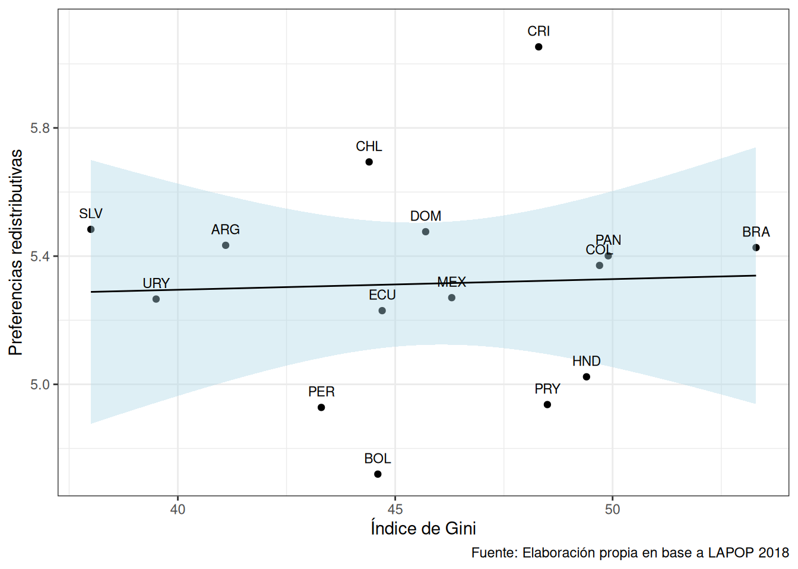
Ahora tenemos un gráfico centrado, más grande y con un título en nuestro documento. Además, podemos llamar a este gráfico usando @fig-asociacion.
Texto de ejemplo:
En la Figura 1 se muestra la asociación entre el promedio de preferencia por la redistribución y el nivel de desigualdad ecónomica de los países.
Apliquemos el mismo procedimiento con una tabla. Para que sea simple, usaremos la edad promedio de los primeros cinco países de la base. Primero, creamos el objeto tab3:
tab3 <- lapop %>%
group_by(pais) %>%
summarise(n = n(),
media = round(mean(edad, na.rm = TRUE), 1)) %>%
head(5)Luego, llamamos a la tabla con kable() especificando en el chunk el nombre (con prefijo tab-) y el título con tbl-cap:
```{r}
#| label: tbl-edad
#| tbl-cap: 'Edad promedio según país'
#| echo: true
kable(tab3,
col.names = c("País", "N", "Edad promedio"),
align = "lcc")
```kable(tab3,
col.names = c("País", "N", "Edad promedio"),
align = "lcc")| País | N | Edad promedio |
|---|---|---|
| ARG | 1528 | 41.8 |
| BOL | 1682 | 39.5 |
| BRA | 1498 | 39.1 |
| CHL | 1638 | 42.2 |
| COL | 1663 | 40.4 |
Al igual que con los gráficos, ahora podemos llamar a esta tabla usando @tbl-edad.
Texto de ejemplo:
En la Tabla 1 se muestra la edad promedio de las personas encuestadas en cinco países de la base LAPOP 2018.
6 Trabajo autónomo
A partir de lo visto en clases, reúnase con su grupo y comiencen a discutir sobre qué gráficos y tablas podrían utilizar en su trabajo final.
Carguen su base de datos en Positron y prueben distintos tipos de visualización para sus variables de interés.
7 Resumen y recursos
Hoy aprendimos a visualizar gráficos y tablas bivariadas en documentos dinámicos con Quarto, así como también a autoreferenciar elementos dentro de un documento .qmd.
Les compartimos una serie de recursos en caso de que busquen profundizar en la construcción de figuras en Quarto